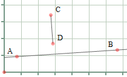

Intersection of two straight lines (Coordinate Geometry)
The point of
intersection
of two
non-
parallel
lines can be found from the
equations of the two lines.
Try this
Drag any of the 4 points below to move the lines. Note where they intersect.
To find the intersection of two straight lines:
-
First we need the equations of the two lines. If you do not have the equations, see
Equation of a line - slope/intercept form
and
Equation of a line - point/slope form
(If one of the lines is vertical, see the section below).
-
Then, since at the point of intersection, the two
equations will have the same values of x and y, we set the two equations equal to each other.
This gives an equation that we can solve for x
-
We substitute that x value in one of the line equations (it doesn't matter which) and solve it for y.
This gives us the x and y coordinates of the intersection.
Example
So for example, if we have two lines that have the following equations (in slope-intercept form):
y = 3x-3
y = 2.3x+4
At the point of intersection they will both have the same y-coordinate value, so we set the equations equal to each other:
3x-3 = 2.3x+4
This gives us an equation in one unknown (x) which we can solve:
Re-arrange to get x terms on left
3x - 2.3x = 4+3
Combining like terms
0.7x = 7
Giving
x = 10
To find y, simply set x equal to 10 in the equation of either line and solve for y:
Equation for a line (Either line will do)
y = 3x - 3
Set x equal to 10
y = 30 - 3
Giving
y = 27
We now have both x and y, so the intersection point is (10, 27)
Which equation form to use?
Recall that lines can be described by the
slope/intercept form
and
point/slope form
of the equation. Finding the intersection works the same way for both.
Just set the equations equal as above. For example, if you had two equations in point-slope form:
y = 3(x-3) + 9
y = 2.1(x+2) - 4
simply set them equal:
3(x-3) + 9 = 2.1(x+2) - 4
and proceed as above, solving for x, then substituting that value into either equation to find y.
The two equations need not even be in the same form. Just set them equal to each other and proceed in the usual way.
When one line is vertical
When one of the lines is vertical, it has no defined slope, so its equation will look something like x=12.
See Vertical lines (Coordinate Geometry). We find the intersection slightly differently.
Suppose we have the lines whose equations are
| y = 3x-3 |
A line sloping up and to the right |
| x = 12 |
A vertical line |
On the vertical line, all points on it have an x-coordinate of 12 (the definition of a vertical line), so
we simply set x equal to 12 in the first equation and solve it for y.
Equation for a line:
y = 3x - 3
Set x equal to 12 Using the equation of the second (vertical) line
y = 36 - 3
Giving
y = 33
So the intersection point is at (12,33).
If both lines are vertical, they are parallel and have no intersection (see below).
When they are parallel
When two lines are parallel, they do not intersect anywhere. If you try to find the intersection, the equations will be an absurdity.
For example the lines y=3x+4 and y=3x+8
are parallel because their slopes (3) are equal.
See Parallel Lines (Coordinate Geometry). If you try the above process you would write
3x+4 = 3x+8. An obvious impossibility.
Segments and rays might not intersect at all

Fig 1. Segments do not intersect
In the case of two non-parallel lines, the intersection will always be on the lines somewhere. But in the case of
line segments
or
rays
which have a limited length, they might not actually intersect.
In Fig 1 we see two line segments that
do not overlap and so have no point of intersection. However, if you apply the method above to them,
you will find the point where they would have intersected if extended enough.
Things to try
-
In the above diagram, press 'reset'.
-
Drag any of the points A,B,C,D around and note the location of the intersection of the lines.
-
Drag a point to get two parallel lines and note that they have no intersection.
-
Click 'hide details' and 'show coordinates'. Move the points to any new location where the intersection is still visible.
Calculate the slopes of the lines and the point of intersection. Click 'show details' to verify your result.
Limitations
In the interest of clarity in the applet above, the coordinates are rounded off to integers and the lengths rounded to one decimal place.
This can cause calculatioons to be slightly off.
For more see
Teaching Notes
Other Coordinate Geometry topics
(C) 2011 Copyright Math Open Reference.
All rights reserved